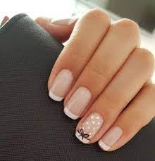

Consejos

No solo dejamos tus manos hermosas, elegis la musica que vos quieras y te llevas un regalito.
- Evita morder tus uñas o arrancarlas.
- No hagas presion o fuerces las uñas.
- Cada vez que laves tus manos, secalas bien para evitar la propagacion de hongos.
- Acude siempre a un profesional para retirarlas y procura tener constante hidratacion.
- Es conveniente realizar el service entre los 15 a 21 dias (depende el crecimiento de la uña).
- Evita mojarlas constantemente (utiliza guantes).
- Se debe aplcar aceite de cuticulas por lo menos una vez al dia.